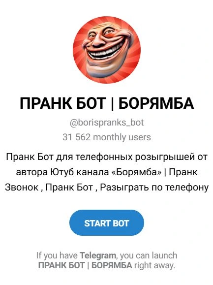
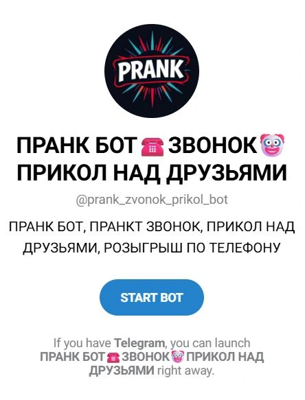
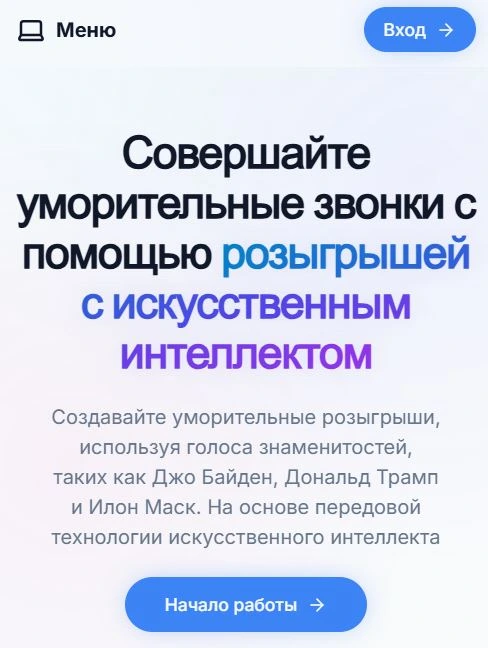
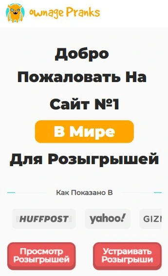

Краткий обзор лучших вебкам сайтов на сегодняшний день
Вебкам сайты для просмотра видео с девушками не так сложны в использовании, как может показаться изначально. Чтобы начать получать от этого удовольствие, не нужно искать указаний куда нажимать, стоит воспользоваться интуитивным поиском. На главных страницах вебкам сайтов обычно находится множество окошек с видео. На понравившиеся можно нажимать и просматривать контент. Можно зарегистрироваться, чтобы получать больше бонусов, например, возможность общаться в привате. Не забывайте, что на некоторых сайтах действует ограничение на страну, а значит нужно воспользоваться VPN, их я пометил дополнительно.
По моим предпочтениям составлен перечень лучших сайтов вебкам, которые заслужили высокие рейтинги в 2026 году:
- Bongacams — посмотрите интерактивные шоу горячих моделей в режиме онлайн на камеру.
- Runetki — свободные сексуальные девушки в онлайн постоянно.
- Stripchat — вебкам для взрослых вещают круглосуточно и без выходных. Активные чаты на мобильных устройствах.
- Chaturbate — присоединяйся. Каталог моделей красавиц 200 тысяч анкет с реальными людьми, что делает его одним из крупнейших сайтов.
- Xcams — мгновенный доступ к развлечениям для взрослых. Представлены инструменты многофакторного поиска.
- Amateur.tv — живые выступления без цензуры. Никаких скрытых плат.
- Livejasmin — Частные камеры для взрослых, дикое развлечение. Доступен бесплатный период.
- Xlovecam — вы можете общаться с тысячами людей в интимной обстановке.
- Myfreecams — живое секс-шоу всю ночь напролет. Более 7,2+ миллионов пользователей.
- Streamate — является одним из самых быстрорастущих онлайн-чатов 18+, в котором постоянно присутствуют тысячи людей.
Прошлым летом меня самого чуть не поймали на телефонный розыгрыш. Звонит якобы сотрудник службы безопасности банка: спокойный уверенный голос, правильные формулировки, ссылка на подозрительную операцию по карте. Я уже потянулся за телефоном с СМС, чтобы назвать код, как вдруг на заднем плане услышал знакомое ухмыляющееся сопение друга. Оказалось, он запустил пранк бот в телеграмме, который читает заранее записанный сценарий профессиональной озвучкой. С того дня я отдельно слежу за темой телефонных пранков и регулярно тестирую разные боты, потому что такой формат шуток при правильном подходе может быть очень смешным и совсем не токсичным.
В этом обзоре собрал пять сервисов, которыми реально сам пользовался или которые тщательно проверил по отзывам и примерам. Тут нет заброшенных проектов, странных ссылок и сервисов, которые не дозваниваются. Только рабочие варианты, где можно заказать пранк звонок или заказать пранк по телефону с готовыми сценариями или сделать свою персональную шутку. Расскажу, чем они отличаются, сколько стоят, кому подойдут и на что обращать внимание, чтобы розыгрыш по телефону был в радость и вам, и тем, кого вы разыгрываете.
Рейтинг ботов для пранков

ПРАНК БОТ | БОРЯМБА
С этого бота я, по сути, и начал погружение в тему. Пранк бот телеграмм с названием ПРАНК БОТ | БОРЯМБА чаще других всплывает в подборках и рекламе, и не зря. Внутри сразу виден аккуратный каталог сценариев: они разложены по категориям — от классических вариантов с якобы выигрышем большой суммы до более закрученных историй с неожиданными родственниками, странными курьерами и другими героями.
Разобраться, как здесь устроить пранк над друзьями, можно буквально за пару минут. Вы выбираете понравившийся сценарий, вводите номер телефона того, кого хотите разыграть, и через короткое время бот инициирует звонок. Голоса звучат достаточно живо, без явного роботизированного оттенка. Есть мужские и женские тембры, разные манеры речи, поэтому сценарии воспринимаются естественно.
Отдельный плюс — возможность загрузить собственную аудиодорожку. Так можно собрать полностью персональный пранк звонок по телефону под конкретного человека. Удобно, если вы хотите имитацию звонка от знакомого или коллеги и готовы чуть-чуть заморочиться с записью. Этот пранк бот тг действительно универсален и подходит для разных задач.
Преимущества:
- Большой выбор готовых сценариев для пранков по телефону на русском языке
- Возможность загрузить свой файл и собрать уникальный пранк звонок на телефон
- Приятная для слуха озвучка без явных цифровых артефактов
- Быстрая обработка заказов, обычно звонок идет в течение нескольких минут
- Каталог сценариев регулярно пополняется новыми вариантами
Недостатки:
- Бесплатных попыток немного, быстро уходят
- В часы высокой нагрузки иногда бывают задержки с дозвоном
- В некоторых тарифах нет записи разговора, приходится ориентироваться только на реакцию жертвы
- Иногда возникают сложности с отдельными операторами связи
- Нет расширенной статистики по совершенным розыгрышам
Кому подходит: Этокт пранк бот в телеграмме больше всего заходит тем, кто регулярно устраивает розыгрыш друзей и не хочет каждый раз с нуля придумывать сценарии. Огромный плюс для занятых людей — заходишь, выбираешь готовый вариант, запускаешь и наслаждаешься реакцией. Новичам удобно за счет понятного интерфейса, а тем, кто уже давно увлекается розыгрышами, понравится возможность создавать кастомные истории.
Заказать пранк над другомRT — Пранк бот
RT — это вариант в стиле минимализма. Интерфейс почти без украшений, зато все максимально понятно с первых секунд. Сценариев здесь меньше, чем в лидерах рейтинга, но базовый набор покрывает самые популярные истории: звонки от курьерских служб, людей из несуществующих структур, поздравления, сообщения о странных списаниях и так далее.
По качеству голоса чуть проще, иногда заметно, что это синтез. На длинных фразах интонации могут звучать менее естественно, чем у живого актера. Но если цель — разок разыграть друга по телефону или коллегу и посмотреть на его реакцию, то этого более чем достаточно.
Отдельно отмечу систему оплаты. Здесь честно дают несколько бесплатных звонков, без хитрых условий и скрытых ограничений. Можно сначала опробовать сервис, понять, как он работает, и только потом решать, нужна ли подписка. Стоимость при этом заметно ниже, чем у части конкурентов: за небольшую сумму вы получаете доступ на месяц без жестких лимитов по количеству вызовов. Это удобный телеграмм бот для розыгрыша, который не требует больших вложений.
Преимущества:
- Лаконичный и понятный интерфейс без лишних кнопок
- Подписка стоит дешевле, чем у многих аналогов
- Дают несколько действительно бесплатных попыток
- Сервис нормально справляется с нагрузкой даже вечером
- Хорошо дружит с основными российскими операторами связи
Недостатки:
- Каталог сценариев довольно компактный
- Голоса иногда звучат немного искусственно
- Нет инструмента для сборки собственных сценариев
- Не предусмотрено автоматическое сохранение записей разговора
- Минимум настроек для изменения деталей истории
Кому подходит: RT выбирают те, кому хочется аккуратно войти в тему и посмотреть, насколько вообще заходит формат прикола звонком. Для быстрого розыгрыша по телефону без долгих подготовок этого бота более чем достаточно. Подходит тем, кто устраивает подобные шутки редко и не планирует платить за дорогие подписки только ради большого каталога.
Перейти в пранк бот телеграм
ПРАНК БОТ☎️ЗВОНОК🤡
У этого сервиса есть ярко выраженный характер. Чувствуется, что создатели ориентировались на более молодую аудиторию, которая живет в мемах, вирусных роликах и постоянно следит за трендами. Сценарии здесь часто отсылают к тому, что сейчас обсуждают в сети: популярные сериалы, громкие новости, шутки про технологии и нейросети.
Недавно появился особенно показательный сценарий: пранк звонок телеграмм от специалиста по искусственному интеллекту, который предлагает пройти тест на человечность и задает странные вопросы. На друзей, которые интересуются этой темой, такой звонок действует особенно забавно.
Технически все работает привычно: выбираете сценарий, вводите номер, ждете звонка. Но фишка сервиса в другом — у него есть активное сообщество. Пользователи делятся идеями, голосуют за новые сценарии и обсуждают, что сработало лучше. Разработчики действительно реагируют на эти запросы и регулярно добавляют свежие варианты, так что библиотека живет и меняется. Это отличный бот розыгрыш в телеграмм для тех, кто ценит свежесть идей.
Преимущества:
- Неординарные сценарии, завязанные на актуальных темах
- Есть комьюнити, которое влияет на развитие сервиса
- Постоянно появляются новые идеи и обновления
- Нормальная стабильность работы, звонки доходят без провалов
- Стоимость расширенного доступа выглядит разумно
Недостатки:
- Из-за синтеза речи иногда слышны небольшие артефакты
- После крупных обновлений периодически всплывают мелкие баги
- Классических сценариев чуть меньше, акцент на необычных
- Персонализация розыгрыша ограничена базовыми настройками
- В праздники служба поддержки отвечает не так быстро, как хотелось бы
Кому подходит: Этот пранк бот по телефону прежде всего для тех, кто любит быть в курсе трендов и не хочет повторять одни и те же шутки. Если вас уже не радуют стандартные истории про курьеров и банковские проверки, а хочется чего-то неожиданного и свежего, стоит присмотреться к этому варианту. Плюс он придется по душе тем, кто сам любит предлагать идеи и участвовать в жизни проекта.
Заказать пранк по телефону
Prank Caller
Теперь перейду к иностранным решениям. Prank Caller — один из самых известных англоязычных сервисов для телефонных розыгрышей. Его главный плюс в том, что озвучкой занимаются реальные актеры. Это не синтез, а живые голоса с интонациями, паузами, эмоциями. Из-за этого многие сценарии звучат как настоящий разговор, а не как прочитанный по бумажке текст.
Интерфейс полностью на английском, но он довольно простой: выбираете категорию, пролистываете доступные сценарии, указываете номер телефона, запускаете звонок. Категорий много — от легких романтических и дружеских подколов до довольно жестких троллинговых историй. Это удобный вариант для тех, кто хочет заказать пранки на профессиональном уровне.
Сервис умеет работать с разными странами, включая Россию. Но качество иногда зависит от того, где находится абонент и как устроена связь у его оператора. В отдельных случаях соединение может быть хуже, чем при использовании локальных решений, это просто нужно иметь в виду. Если ищете программу для пранка по телефону на английском языке, это один из лучших вариантов.
Преимущества:
- Озвучка сценариев живыми актерами
- Большой каталог историй на разные темы и ситуации
- Поддержка множества стран и международных номеров
- Высокое качество звука и стабильность соединения в большинстве случаев
- Адекватная поддержка и регулярные обновления библиотеки
Недостатки:
- Все сценарии только на английском языке
- Стоимость выше, чем у многих русскоязычных аналогов
- Некоторые истории могут показаться слишком жесткими
- Небольшое количество бесплатных попыток
- Иногда бывают сложности с отдельными российскими операторами
Кому подходит: Prank Caller уместен, если вы уверенно чувствуете себя в английском языке, общаетесь с иностранцами или хотите необычно разыграть друга по телефону, который хорошо понимает английскую речь. Также подойдет тем, кто ценит именно актерскую подачу текста и готов за это доплачивать. Для тех, кто хочет выйти за рамки привычных сценариев и попробовать международный формат розыгрышей по звонку, это интересный вариант.
Заказать телефонный пранк
Ownage Pranks
Завершает подборку крупная платформа Ownage Pranks. Здесь уже чувствуется другой масштаб: отдельное мобильное приложение, веб-версия, свой канал с подборками удачных розыгрышей, узнаваемые персонажи. Внутри сотни сценариев, набор голосов под разные типажи и инструменты для создания кастомных звонков.
Я пробовал приложение на айфоне. Ощущения такие: все аккуратно отрисовано, логика понятная, интерфейс не перегружен. Переходы плавные, ничего не тормозит. Больше всего понравилась функция управляемого пранка. Во время звонка вы видите перед собой набор реплик и в зависимости от ответов собеседника нажимаете подходящие. Получается почти живое общение, но с заранее продуманными фразами, и от этого розыгрыш становится непредсказуемым не только для жертвы, но и для вас. Это один из лучших ботов розыгрыша по телефону на рынке.
Преимущества:
- Огромная коллекция сценариев и голосовых персонажей
- Удобное мобильное приложение с продуманной навигацией
- Интерактивный пранк в реальном времени с выбором реплик
- Качественная озвучка от профессиональных актеров
- Платформа развивается, добавляются новые функции и сценарии
Недостатки:
- Подписка стоит ощутимо дороже, чем у многих других решений
- Интерфейс и сценарии без русской версии
- Часть возможностей доступна только в премиум-доступе
- Для комфортной работы нужен хороший уровень английского
- Для редких разовых розыгрышей может оказаться избыточным
Кому подходит: Ownage Pranks — выбор для тех, кто воспринимает телефонные пранки как хобби, а не как разовую шутку. Если вы часто устраиваете розыгрыши по телефону, думаете о собственных рубриках, ведете блог или канал и хотите получать максимально качественный материал, эта платформа дает очень много инструментов. Также она подойдет тем, кто любит управлять процессом и реагировать на собеседника в моменте, а не просто запускать статичный сценарий.
Попробовать приколы по телефонуПолезная информация
Как вообще работают боты для телефонных звонков: мой опыт
Когда я впервые услышал о том, что роуминг шуток можно переложить на ботов, искренне не понимал, как программа вообще способна внятно поговорить с живым человеком. Казалось, что это будет что-то очень деревянное. Поэтому я начал с простого — запустил несколько сервисов на свой второй номер, чтобы почувствовать их изнутри.
В целом большинство ботов для розыгрышей в тг используют похожую схему. У них есть набор заранее записанных аудиофрагментов или система синтеза речи, которая озвучивает текст прямо во время звонка. Вы выбираете сценарий, вводите номер, дальше включается интернет-телефония: сервис делает вызов через VoIP, а на экране у человека отображается обычный мобильный или городской номер. Иногда номер подменяется, чтобы пранк с телефоном выглядел максимально правдоподобно.
Один из первых тестов я провел на друге, который любит заказывать еду. Выбрал сценарий с курьером и заказом, которого он якобы ждет. Сервис все сделал сам: позвонил, проиграл реплики, а потом дал мне запись разговора. Я слушал и смеялся, пока друг всерьез спорил с голосом, доказывая, что ничего не заказывал. По звуку это был совершенно привычный звонок по телефону розыгрыш, без роботизированных интонаций.
Есть правда нюанс. Не у всех операторов одинаковое отношение к подобным звонкам. Где-то такие вызовы спокойно проходят, где-то часть пранков отсекается автоматическими фильтрами как подозрительная активность. Поэтому, выбирая пранкер бота или бот для телефонных звонков, полезно почитать свежие отзывы именно от абонентов вашего оператора и обязательно сделать пару пробных звонков на свой запасной номер, прежде чем массово запускать телефонные розыгрыши.
Почему часть пранков по телефону проваливается
За то время, пока я экспериментировал с разными сервисами, стало понятно, что неудачный розыгрыш — это не всегда проблема платформы. Иногда сам сценарий выбран неудачно или момент для звонка выбран крайне плохо.
Самая частая ошибка — слишком банальная история. Если человек постоянно смотрит ролики с телефонными пранками, он моментально распознает стандартный звонок от псевдо налоговой или банка. В этом случае лучше либо искать сценарий, который максимально близок к реальной ситуации этого друга, либо брать нестандартные варианты, которые он не ожидает.
Вторая распространенная проблема — время. Разыграть друга звонком посреди рабочего совещания или глубокой ночью — почти гарантированный провал. Человек просто сбросит вызов и потом даже не перезвонит. Гораздо лучше работает вечер или выходной, когда у всех более расслабленное состояние.
Есть и чисто техническая сторона. Некоторые операторы агрессивно фильтруют подозрительные вызовы, и часть пранков от ботов просто не доходит до адресата. У меня несколько раз было так, что сервис честно списал попытку, показал, что розыгрыш по телефону звонок прошел, а у друга в журнале вызовов пусто. После пары таких ситуаций я стал всегда сначала тестировать пранк розыгрыш по телефону на своем запасном номере и только потом запускать розыгрыш на кого-то еще.
И еще важная вещь, о которой легко забыть, когда настроение игривое. У всех свой порог чувствительности. Те темы, которые для вас кажутся безобидной шуткой, для другого человека могут быть болезненными. Мне однажды пришлось долго извиняться за сценарий про долги по кредиту, хотя тогда он казался уместным. Оказалось, что у человека недавно были реальные проблемы с банком, и ему было совсем не до смеха. Поэтому перед тем как заказать телефонный розыгрыш или заказать телефонный пранк, стоит задуматься не только о технической стороне, но и о контексте жизни того, кого вы собираетесь разыгрывать.
Какой телефонный телеграм бот для розыгрыша выбрать
Чтобы не теряться в названиях, соберу итоговые наблюдения в более практичную форму. Если вы только знакомитесь с темой и хотите аккуратно протестировать формат пранка над друзьями, разумно начать с RT — Пранк бот. Он недорогой, предлагает пару бесплатных попыток и дает общее понимание, как устроены такие сервисы.
Если после первых экспериментов понимаете, что пранки по телефону — это ваш формат и хочется иметь запас сценариев на все случаи жизни, логично смотреть в сторону ПРАНК БОТ | БОРЯМБА. Там действительно много готовых историй, плюс есть инструмент для создания своих. Это надежный пранк бот для регулярного использования.
Тем, кому важна свежесть идей и привязка к трендам, ближе окажется ПРАНК БОТ☎️ЗВОНОК🤡. Живое комьюнити и постоянные обновления сценариев помогают оставаться в рамках актуального юмора, а не повторять шутки многолетней давности.
Если у вас есть друзья за границей, коллеги из других стран или вы просто любите англоязычный контент, для таких задач удобно использовать Prank Caller. Профессиональная актерская озвучка и широкий набор сценариев перекрывают более высокую цену.
Ну а Ownage Pranks имеет смысл брать тем, кто готов вкладываться и временем, и деньгами и воспринимает телефонные розыгрыши как отдельный вид развлечения. Здесь максимальный набор функций, но и порог входа выше.
Часто задаваемые вопросы
Законно ли пользоваться ботами для розыгрышей по телефону
Сам по себе пранк звонок формально находится где-то на границе развлечения и юридической серой зоны. Несерьезный розыгрыш друзей по телефону, где вы не угрожаете, не вымогаете деньги и не выдаетесь за сотрудников госорганов, обычно не приводит к последствиям. Но если человек посчитает, что ему нанесли вред, и сможет доказать моральный или материальный ущерб, теоретически он может пойти в суд. Поэтому безопаснее держать шутки в рамках достаточно безобидных тем.
Можно ли понять, кто заказал пранк звонок
С технической стороны это возможно, но на практике непросто. Многие сервисы используют подмену номера и защищенные каналы передачи данных, из-за чего быстро вычислить инициатора розыгрыша сложно. Однако при серьезном инциденте, если подключаются правоохранительные органы и есть признаки правонарушения, они могут запросить информацию у провайдера VoIP. То есть полностью анонимным такой телефонный розыгрыш назвать нельзя, и лучше заранее не переходить границы разумного юмора.
Как оценить, что сервис надежный и не обманет
Я ориентируюсь в первую очередь на свежие отзывы, активность каналов и наличие нормальной поддержки. Рабочие боты для розыгрышей в тг обычно ведут публичные чаты или каналы, где выкладывают примеры пранков, отвечают на вопросы и честно пишут об ограничениях. Хороший способ проверить сервис — воспользоваться бесплатной попыткой и сделать прикол для друга по телефону на свой номер. Если звонок прошел, качество голоса устраивает, а интерфейс не вызывает раздражения, значит можно идти дальше. Также полезно изучить разные сайты для розыгрышей друзей и сравнить их возможности.
Можно ли использовать такие боты для бизнеса и массовых рассылок
Я бы этого делать не стал. Автоматические звонки без согласия абонентов легко подпадают под законы о защите персональных данных и антиспам регулирование. К тому же навязчивые телефонные пранки со стороны компании почти гарантированно испортят репутацию. Такие сервисы уместнее оставить для личных шуток внутри круга друзей, коллег и родственников, которые нормально воспринимают подобный юмор.
Мир телефонных пранков меняется довольно быстро. Появляются новые боты, голосовой синтез становится лучше, сценарии становятся хитрее и смешнее. Но при всей этой технологичности суть остается прежней — это способ посмеяться вместе, а не инструмент для того, чтобы портить кому-то жизнь. Выбирайте те сайты для розыгрышей друзей и боты, которым доверяете, думайте о контексте и характере человека, которого хотите разыграть, и тогда пранк по телефону останется тем, чем и должен быть — веселой историей, которую потом с удовольствием вспоминают обе стороны.